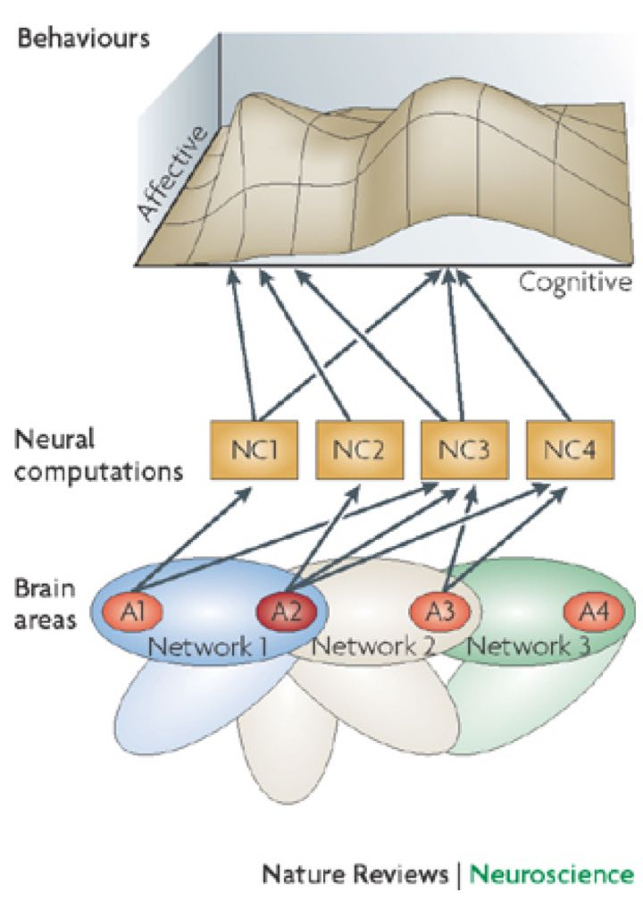

source: Pessoa 2008 We are constantly bombarded with a myriad of different choices that we must make while simultaneously regulating our fluctuating emotions. Although emotions are often thought to hinder our ability to make rational decisions, that is not always the case[1, 2]. For example, being in a sad mood might help us process information more systematically[3]. This interaction between emotion and decision making is my primary research interest. More specifically, I am interested in how we evaluate evidence to make decisions and how our emotions alter this process.
Previously, I have done most of my research using experimental and computational methods on behavioral and survey measures. Moving forward, I would like to expand on these skills and combine them with neuroimaging techniques to answer questions like: How can we enhance our understanding of psychological theories on emotion and decision making by comparing the anatomical and functional connections in the brain that bring forth interactions between emotion and cognition?
In the future, I hope to continue to develop my current research interests and employ an interdisciplinary approach to investigate how emotion is integrated with cognition with a focus on decision making. I want to explore cognitive-emotional interactions using neuroimaging tools and recordings of participants’ physiological and behavioral responses.